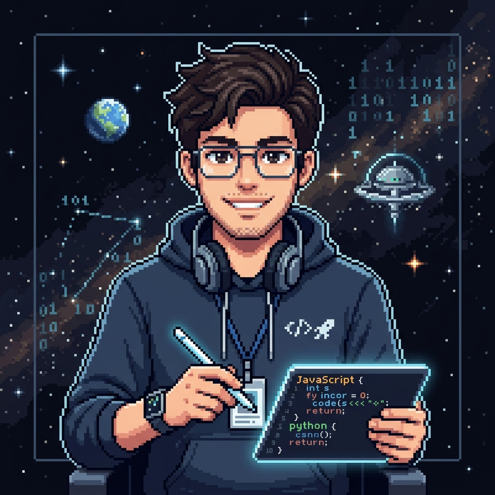

Preetham A S
ECE Engineering Ninja | Tech Enthusiast
About Me

Hello, I'm Preetham! 👋
I am a motivated Electronics and Communication Engineering student with a deep passion for bridging the gap between hardware and software. I specialize in C++ and Python, with a keen interest in embedded systems and sensor-based electronics.
When I'm not studying or building ultrasonic measurement devices, I enjoy sharpening my logical thinking and problem-solving skills through hands-on technology projects.
Goal: Seeking an entry-level opportunity to apply my technical knowledge and contribute effectively to an innovative team.
Technical Skills
Programming
C++
Python
HTML/CSS
Electronics & Embedded
- Microcontrollers (8051)
- Digital Electronics
- Embedded Systems
- Sensors (Ultrasonic, IR)
Tools & Soft Skills
Education
Bachelor of Engineering - ECE
Adhichunchanagiri Institute of Technology, Chikmagalur
3rd Semester | Score: 83%
Pre-University / 12th
Score: 72%
Experience
Fresher — Currently seeking internship opportunities to gain practical industry experience.
Projects
Distance Measurement Using Ultrasonic Sensor
- Developed a distance measurement project using an ultrasonic sensor.
- Worked on measuring the distance of objects using ultrasonic waves.
- Gained practical experience in sensor-based measurement and electronics.
Food Fertilization
- Worked on a project related to food fertilization.
- Explored the application of technology to support agricultural/food-related processes.
- Developed practical problem-solving and project implementation skills.